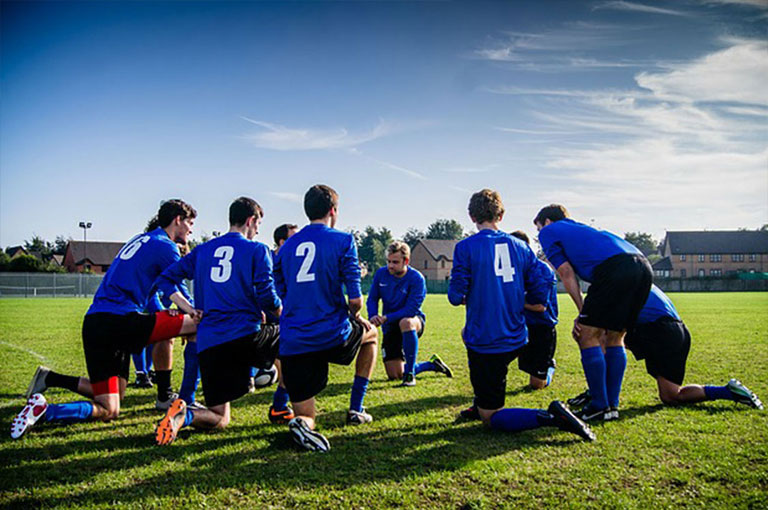
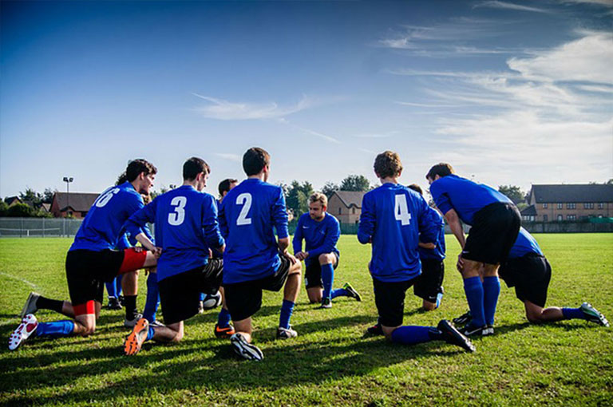
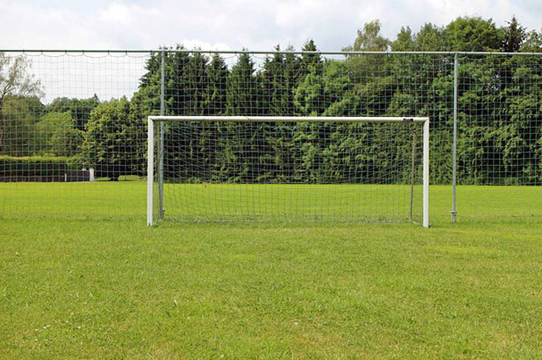
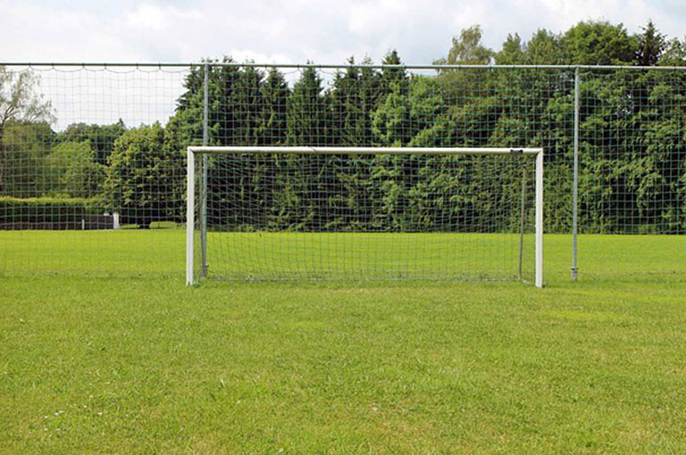

Conmebol Copa America 2021


Neymar da Silva Santos Júnior (born 5 February 1992), known as Neymar, is a Brazilian professional footballer who plays as a forward for Ligue 1 club Paris Saint-Germain and the Brazil national team.

Lionel Andrés Messi[note 1] (Spanish pronunciation: [ljoˈnel anˈdɾes ˈmesi] (About this soundlisten); born 24 June 1987), also known as Leo Messi, is an Argentine professional footballer.

Cristiano Ronaldo dos Santos Aveiro GOIH ComM (born 5 February 1985) is a Portuguese professional footballer who plays as a forward for Serie A club Juventus and captains the Portugal national team.

Paulo Exequiel Dybala (born 15 November 1993) is an Argentine professional footballer who plays as a forward for Serie A club Juventus and the Argentina national team.

Mesut Özil (born 15 October 1988) is a German professional footballer who plays as an attacking midfielder for Süper Lig club Fenerbahçe. Nicknamed "The Assist King.

Mauro Emanuel Icardi (born 19 February 1993) is an Argentine professional footballer who plays as a striker for Ligue 1 club Paris Saint-Germain and the Argentina national team.

Ángel Fabián di María (born 14 February 1988) is an Argentine professional footballer who plays for Ligue 1 club Paris Saint-Germain and the Argentina national team.

Kylian Mbappé Lottin (born 20 December 1998) is a French professional footballer who plays as a forward for Ligue 1 club Paris Saint-Germain and the France national team.

Mohamed Salah Hamed Mahrous Ghaly (born 15 June 1992) is an Egyptian professional footballer who plays as a forward for Premier League club Liverpool and captains the Egypt national team.

Harry Edward Kane MBE (born 28 July 1993) is an English professional footballer who plays as a striker for Premier League club Tottenham Hotspur and captains the England national team.

Kevin De Bruyne (born 28 June 1991) is a Belgian professional footballer who plays as a midfielder for Premier League club Manchester City, where he is vice-captain, and the Belgium national team.

Philippe Coutinho Correia (born 12 June 1992) is a Brazilian professional footballer who plays as an attacking midfielder or winger for La Liga club Barcelona and the Brazil national team.
The 2021 Copa América was the 47th edition of the Copa América, the international men's football championship organised by South America's football ruling body CONMEBOL. The tournament took place in Brazil from 13 June to 10 July 2021.


 

 

The Campeonato Nacional de Liga de Primera División, commonly known simply as Primera División in Spain, and as La Liga in English-speaking countries and officially as LaLiga Santander for sponsorship reasons,[2] stylized as LaLiga, is the men's top professional football division of the Spanish football league.

The European Super League (ESL), officially The Super League, is a proposed annual club football competition that would be contested by twenty European football clubs, although only twelve clubs joined it. It is organised by the European Super League Company, S.L., a commercial enterprise created to rival the UEFA Champions League.

Copa América (English: America Cup) or CONMEBOL Copa América, known until 1975 as the South American Football Championship (Campeonato Sudamericano de Fútbol in Spanish and Copa Sul-Americana de Futebol in Portuguese),[1] is the main men's football tournament contested among national teams from South America.